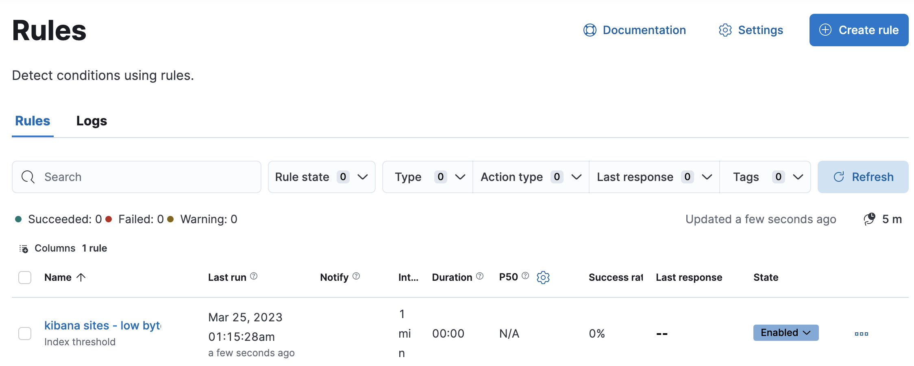

Create and manage rules
editThe Stack Management > Rules UI provides a cross-app view of alerting. Different Kibana apps like Observability, Security, Maps and Machine Learning can offer their own rules. Rules provides a central place to:
- Create and edit rules
- Manage rules including enabling/disabling, muting/unmuting, and deleting
- Drill down to rule details
- Configure settings that apply to all rules in the space

For more information on alerting concepts and the types of rules and connectors available, go to Alerting.
Required permissions
editAccess to rules is granted based on your alerting features privileges. For more information, go to Security.
Create and edit rules
editSome rules must be created within the context of a Kibana app like Metrics, APM, or Uptime, but others are generic. Generic rule types can be created in Rules by clicking the Create rule button. This will launch a flyout that guides you through selecting a rule type and configuring its conditions and actions.
After a rule is created, you can open the action menu (…) and select Edit rule to re-open the flyout and change the rule properties.
You can also manage rules as resources with the Elasticstack provider for Terraform. For more details, refer to the elasticstack_kibana_alerting_rule resource.
Rule type and conditions
editDepending on the Kibana app and context, you might be prompted to choose the type of rule to create. Some apps will preselect the type of rule for you.
Each rule type provides its own way of defining the conditions to detect, but an expression formed by a series of clauses is a common pattern.
For example, in an Elasticsearch query rule, you specify an index, a query, and a threshold, which uses a metric aggregation operation (count, average, max, min, or sum):

All rules must have a check interval, which defines how often to evaluate the rule conditions. Checks are queued; they run as close to the defined value as capacity allows.
For details on what types of rules are available and how to configure them, refer to Rule types.
Actions
editYou can add one or more actions to your rule to generate notifications when its conditions are met and when they are no longer met.
Each action uses a connector, which provides connection information for a Kibana service or third party integration, depending on where you want to send the notifications.
[preview] This functionality is in technical preview and may be changed or removed in a future release. Elastic will work to fix any issues, but features in technical preview are not subject to the support SLA of official GA features. Some connectors that perform actions within Kibana, such as the Cases connector, require less configuration. For example, you do not need to set the action frequency or variables.
After you select a connector, set the action frequency. You can choose to create a summary of alerts on each check interval or on a custom interval. Alternatively, you an choose to run actions for each alert (at each check interval, only when the alert status changes, or at a custom interval).
If you choose a custom action interval, it cannot be shorter than the rule’s check interval.
For example, if you create an Elasticsearch query rule, you can send notifications that summarize the new, ongoing, and recovered alerts on a custom interval:

When you choose to run actions for each alert, you must specify an action group.
Each rule type has a set of valid action groups, which affect when an action runs.
For example, you can set Run when to Query matched or Recovered for the Elasticsearch query rule:
Connectors have unique behavior for each action group. For example, you can have actions that create an Opsgenie alert when rule conditions are met and recovery actions that close the Opsgenie alert. For more information about connectors, refer to Connectors.
If you are not using alert summaries, actions are generated per alert and a rule can end up generating a large number of actions. Take the following example where a rule is monitoring three servers every minute for CPU usage > 0.9, and the action frequency is On check intervals:
- Minute 1: server X123 > 0.9. One email is sent for server X123.
- Minute 2: X123 and Y456 > 0.9. Two emails are sent, one for X123 and one for Y456.
- Minute 3: X123, Y456, Z789 > 0.9. Three emails are sent, one for each of X123, Y456, Z789.
In this example, three emails are sent for server X123 in the span of 3 minutes for the same rule. Often, it’s desirable to suppress these re-notifications. If
you set the action frequency to On custom action intervals with an interval of 5 minutes, you reduce noise by getting emails only every 5 minutes for
servers that continue to exceed the threshold:
- Minute 1: server X123 > 0.9. One email will be sent for server X123.
- Minute 2: X123 and Y456 > 0.9. One email will be sent for Y456.
- Minute 3: X123, Y456, Z789 > 0.9. One email will be sent for Z789.
To get notified only once when a server exceeds the threshold, you can set the action frequency to On status changes. Alternatively, consider using alert summaries to reduce the volume of notifications.
Action variables
editYou can pass rule values to an action at the time a condition is detected. To view the list of variables available for your rule, click the "add rule variable" button:

For more information about common action variables, refer to Rule action variables.
Snooze and disable rules
editThe rule listing enables you to quickly snooze, disable, enable, or delete individual rules. For example, you can change the state of a rule:

If there are rules that are not currently needed, disable them to stop running checks and reduce the load on your cluster.
When you snooze a rule, the rule checks continue to run on a schedule but alerts will not generate actions. You can snooze for a specified period of time, indefinitely, or schedule single or recurring downtimes:

When a rule is in a snoozed state, you can cancel or change the duration of this state.
[preview] This functionality is in technical preview and may be changed or removed in a future release. Elastic will work to fix any issues, but features in technical preview are not subject to the support SLA of official GA features. To temporarily suppress notifications for rules, you can also create a maintenance window.
View rule details
editYou can determine the health of a rule by looking at the Last response in Stack Management > Rules. A rule can have one of the following responses:
-
failed - The rule ran with errors.
-
succeeded - The rule ran without errors.
-
warning - The rule ran with some non-critical errors.
Click the rule name to access a rule details page:

In this example, the rule detects when a site serves more than a threshold number of bytes in a 24 hour period. Four sites are above the threshold. These are called alerts - occurrences of the condition being detected - and the alert name, status, time of detection, and duration of the condition are shown in this view. Alerts come and go from the list depending on whether the rule conditions are met. For more information about alerts, go to View alerts.
If there are rule actions that failed to run successfully, you can see the details on the History tab.
In the Message column, click the warning or expand icon  or click the number in the Errored actions column to open the Errored Actions panel.
In this example, the action failed because the
or click the number in the Errored actions column to open the Errored Actions panel.
In this example, the action failed because the xpack.actions.email.domain_allowlist setting was updated and the action’s email recipient is no longer included in the allowlist:
Import and export rules
editTo import and export rules, use saved objects.
Some rule types cannot be exported through this interface:
Security rules can be imported and exported using the Security UI.
Stack monitoring rules are automatically created for you and therefore cannot be managed in Saved Objects.
Rules are disabled on export. You are prompted to re-enable the rule on successful import.